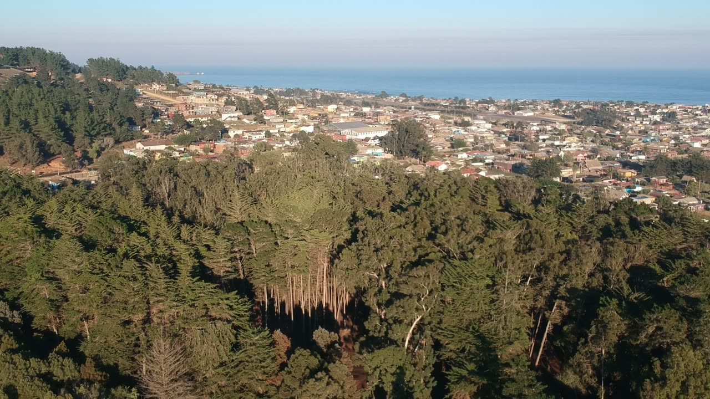
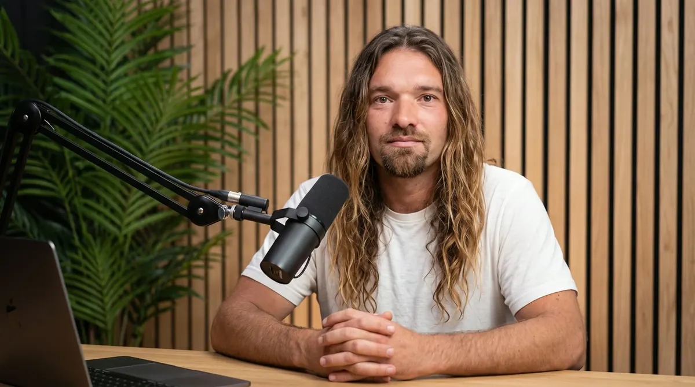
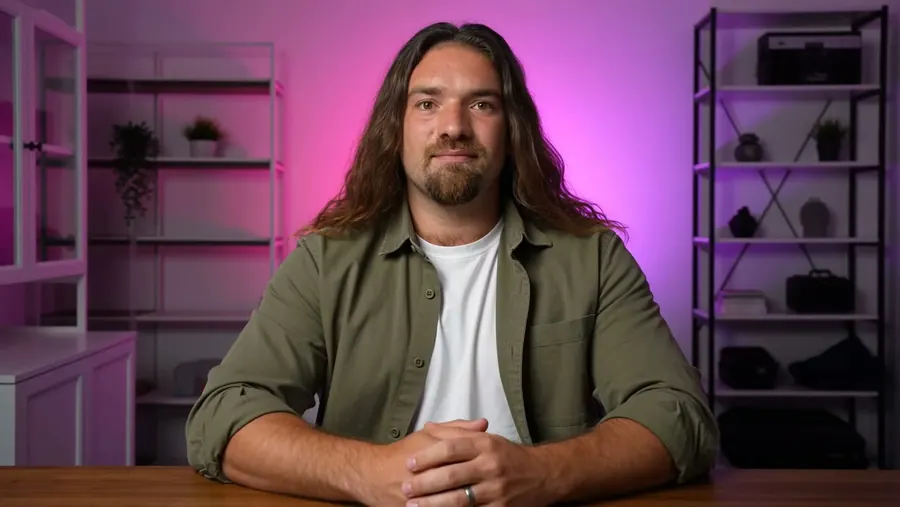
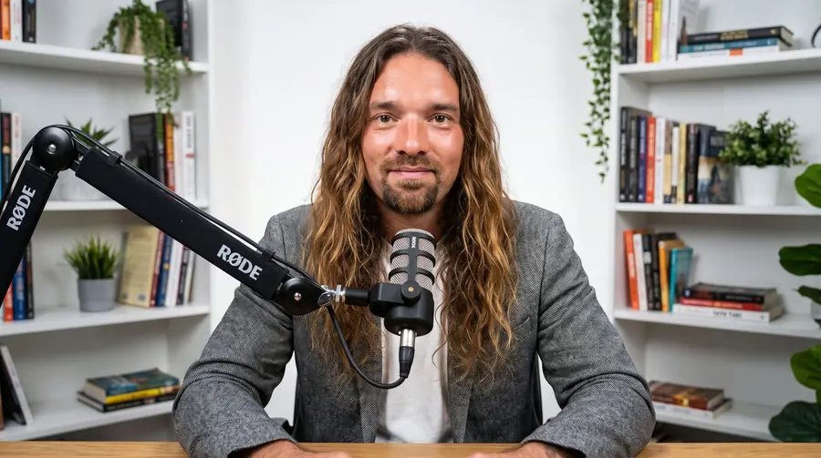
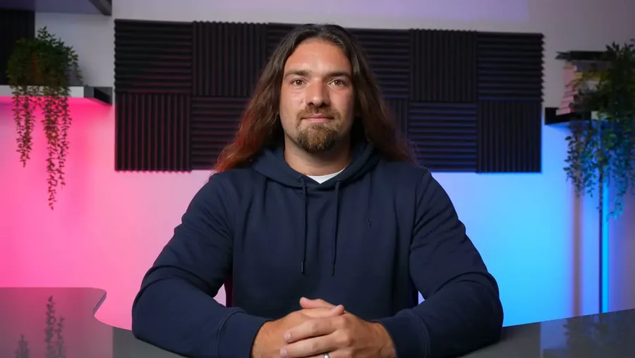

Parada 01 · Sudamérica
Mochila al hombro
Recorrí Sudamérica por tierra hasta Colombia. Ahí aprendí a moverme con poco y a preguntar todo.


Mati · disponible para proyectos34.39° S · 72.00° O · Pichilemu, Chile
Soy Mati. Viajo desde los 22, llevo 20 años haciendo webs y campañas, grabo con dron y hoy armo con IA lo que un proyecto chico necesita para funcionar solo. Esta es la historia corta.
Por tierra, en auto y en tren. Cada viaje dejó algo que hoy uso en un proyecto. Sigue bajando: el tren avanza contigo.
Recorrí Sudamérica por tierra hasta Colombia. Ahí aprendí a moverme con poco y a preguntar todo.
Arrendaba auto para encontrar proveedores de ropa americana. De esos viajes salió un proyecto entero.
Viajé en tren por Europa del Este y el norte, una y otra vez. Ventana, cuaderno y muchas ideas.
Empecé a grabar desde el aire. Mirar un lugar desde arriba cambia cómo lo cuentas.
Lugares chicos que funcionan bien. Ahí entendí que lo simple, bien hecho, alcanza.
Lo que aprendí afuera lo traje aquí, para construir proyectos con lo que hay en el lugar.
No son ideas en una pizarra. Son cosas que funcionan hoy en Pichilemu, y aquí te muestro cómo se hicieron.

De los viajes buscando proveedores nació Importadora Maully: fardos y lotes de ropa americana, revisados prenda por prenda.
importadoramaully.cl →La tiny cruzando el puente camino al Pangal, en mayo de 2026. Camperízate reúne la tiny y la carpa inflable.
Ver Camperízate →
Un proyecto en el que trabajo: reservas directas en su web, bot de WhatsApp y panel para el equipo. Aquí se probó todo antes de ofrecerlo.
lilafken.com →


Grabo lo que aprendo: dron, IA y cómo armar proyectos que funcionan solos. En Kreathur hacemos el resultado; aquí te muestro el camino.
Te respondo yo, por WhatsApp. Escribe abajo y se abre el mensaje listo para enviar.